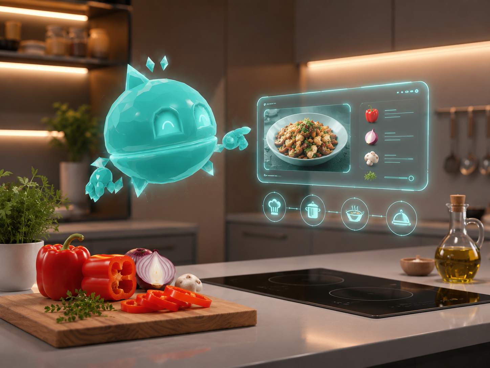

LLM-Driven Mixed Reality Cooking Assistant
Unity · Meta XR SDK · Gemini API
Developed a Meta Quest 3 application using Passthrough and Gemini 2.5 Flash to recognize ingredients, generate structured recipes, and support a context-aware assistant with voice, image, and gesture interaction.